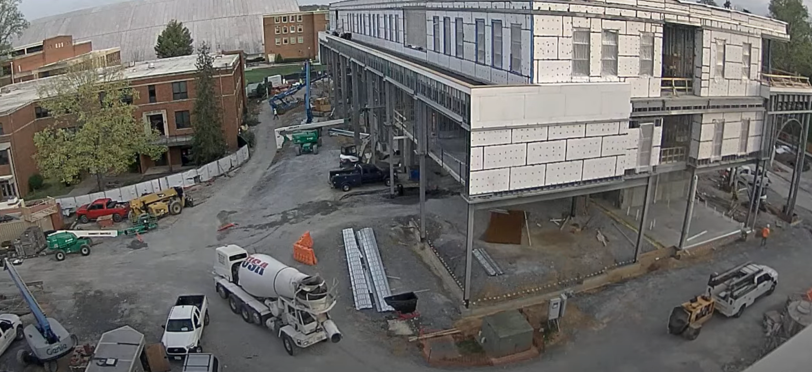

A truck, towing equipment, entered the site and drove onto the first floor of the building. Since the floor has not yet been completed, the truck is driving over natural ground rather than a finished surface. As a result, there is no risk of damage to any final flooring materials or ongoing construction work in that area.
Four crew members were actively working on the first floor when, around 7:00 AM, additional workers began arriving. A concrete mixer truck reversed onto the first floor, taking approximately two minutes from the moment it appeared on camera to when it was fully parked in position. During this time, six more crew members arrived on site, but walked towards different areas of the building.
At 7:06 AM, a boom lift was in use on the far left side of the building, raising a crew member to the second floor to perform ceiling work. At 7:15 AM, the boom lift lowered the worker to the ground level for a few minutes to retrieve materials, then raised him back up within two minutes. By 7:22 AM, the boom lift was lowered again and repositioned further along the building for inspection work. The readjustment process took approximately three minutes.
At 7:28 AM, the green boom lift positioned near the concrete mixer began rising to the second floor level. By 7:32 AM, a telehandler moved along the left-side path and remained there for approximately 10 minutes before heading toward the back left corner of the building. Around the same time, a truck pulled up next to the concrete mixer, where six crew members gathered to unload and pass materials from the truck bed. These materials were carried toward the back side of the building, near the blue boom lift on the left. At 7:40 AM, a blue forklift was seen driving near the concrete mixer. Two minutes later, it was observed carrying what appeared to be cinder blocks, which were then placed along the white temporary construction barriers on the left side of the site.
At 7:46 AM, a compact excavator drove up and parked next to the concrete mixer, where it proceeded to drop off material. At 8:07 AM, the concrete mixer departed from its position, followed by the truck that had earlier towed equipment onto the first floor. Both vehicles initially moved toward the left-side path, but once the truck had enough clearance, they redirected and exited on the bottom path.
